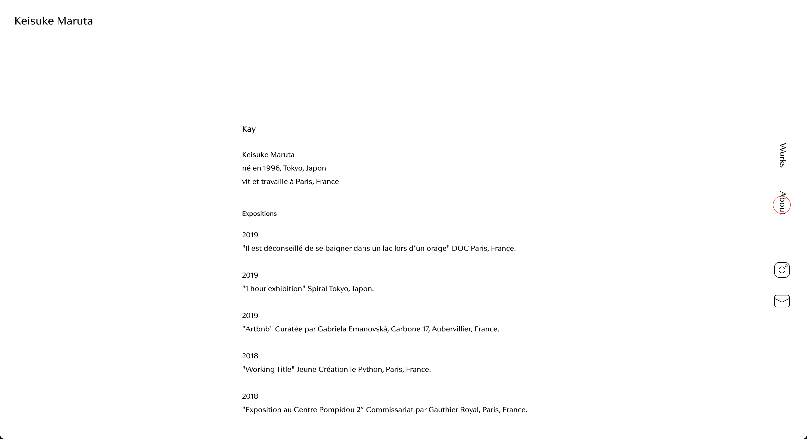
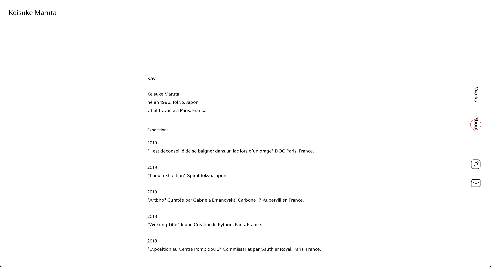

Portfolio
Design Sprint & UI design
Doctolib Redesign
Projet
Design Sprint en 2 jours
Rôle
Design Sprint (En équipe avec Léna, Nadèje, Stéphanie, Yola)
UI design (En solo)
Date & Lieu
Octobre 2020, Université Paris 1
Idée à développer
Doctolib s’est imposé comme un acteur de la santé et le Covid-19 fait apparaître de nouvelles opportunités pour améliorer la gestion de l’afflux de demandes vers les médecins et les laboratoires, pour éviter les logues files d’attente. Quel dispositif pourrait améliorer le système actuel ?
Processus du Design Sprint
🗺 Map
✏️ Sketch
🔀 User test flow
✌️ Prototype papier & Test
🗺 Map
Définir la direction, trouver le chemin
- Définition des objectifs à long terme & des points à résoudre
- La méthode HMW (How Might We?)
- Grouper et catégoriser
- Cartographie du parcours
- Définir le périmètre du Sprint
"Dans 2 ans, Doctolib proposera des mini-RDV pour les renouvellements d'ordonnances."
"Dans 2 ans, Doctolib aura des filtres plus affinés pour trier les crénaux disponibles en fonction de notre emploi du temps."
"Dans 2 ans, Doctolib offrira une encyclopédie des maladies et des médicaments."
1
Objectifs à long terme & des points à résoudre
2
La méthode HMW (How Might We ?)
Passer d'un problème à une opportunité
"Pouvons-nous proposer des alertes/infos en temps réel ?"
↪ "Comment pourrions-nous regrouper les infos/actu sanitaires et les consignes ?"
"Pouvons-nous réhumaniser la relation patient/médecin ?"
↪ "Comment pourrions-nous recréer la relation médecin de famille ?"
Nous avons groupé nos idées en 5 catégories :
- Centraliser l'information
- Améliorer la relation patient/médecin
- Organiser les flux des patients
- Collaborer avec réseaux externes & internes
- Baisser les tarifs
3
Grouper et catégoriser
4
Cartographie du parcours
Partir de l'objectif final et identifier les étapes qui y mènent
- Regrouper les infos/actu sanitaires et les consignes
- Donner plus d'autonomie aux patients
- Recréer la relation médecin de famille
5
Définir le périmère du Sprint
✏️ Sketch
Imaginer, échanger, développer une histoire ensemble
- Notes
- Ideas
- Crazy Eights
- Solution Sketch
🔀 User test flow
Élaborer le scénario d'utilisation
Chaque membre de l'équipe a dessiné un scénario sur une ou deux fonctions de l'application, ensuite nous avons fusionné des parties qui sont votées "intéressantes" afin de créer un scéanrio complet.
✌️ Prototype papier & Test
Donner de la vie aux idées –
Analyser des comportements des utilisateurs, trouver des points à améliorer
3 utilisateurs ont participé au test. Chaque test a été guidé par une intervieweuse, une notatrice et une "ordinateur" qui manipule le prototype papier.

 
